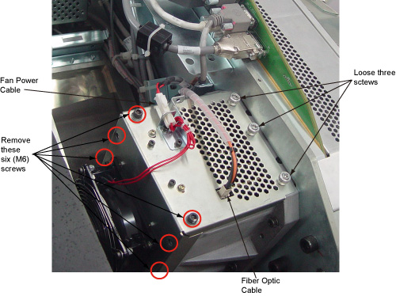
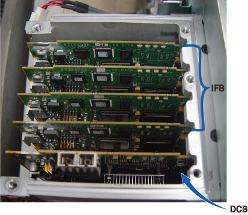

Operating Documentation
Direction 5181178-800, Rev# 16
BrightSpeed Select Service Methods Gen
Module Version 2.0, Version Date 7/23/12
Operating Documentation |
| Required Persons | Preliminary Reqs | Procedure | Finalization |
|---|---|---|---|
| 1 | Not Applicable | 30 mins | 60 mins |
| Last Revised: | Sep 28, 2009 |
| Item | Qty | Effectivity | Part# | Manufacturer | |
|---|---|---|---|---|---|
| Standard FE Tool Kit | 1 | - | - | - | |
| Item | Qty | Effectivity | Part# | Manufacturer | |
|---|---|---|---|---|---|
| PDAS Interface Board (IFB) | 1 | - | 5194006-4 | - | |
| ||||
| Follow ALL Electro-Static Discharge procedures. Always use ESD Wrist Strap and grounding cords. The use of a ground Monitor is suggested | ||||
| ||||
| Follow ALL Electro-Static Discharge procedures. Always use ESD Wrist Strap and grounding cords. The use of a ground Monitor is suggested | ||||
Position the table to its lowest position.
Remove the gantry right side cover.
| ||||
| Always turn OFF the HVDC before the 120VAC. Turning OFF 120VAC power before HVDC power can result in equipment damage. | ||||
Turn OFF Axial Enable, HVDC, and 120VAC switches on the Service Switch panel.
Remove the gantry top and front covers.
Position the DAS at the 12 o'clock position.
Lock the gantry in position using the rotational lock.
Disconnect all cables on IFB cover. One is Fiber Optic Cable, the other is fan power cable.
Loose the 3 screws, remove M6 x 6 hex screws on the IFB cover. See Illustration 1
Illustration 1: Screws on Chassis

| NOTE: | Do not touch any other screws on the IFB cover. |
Slide the IFB cover.
Put on wrist strap and use ESD precautions.
Illustration 2: DIFB Board removal

Slide the IFB out of chassis and place into anti-static bag.
| ||||
| Follow ALL Electro-Static Discharge procedures. Always use ESD Wrist Strap and grounding cords. The use of a ground Monitor is suggested | ||||
Get new IFB from anti-static bag.
Align IFB edges to board guides in Chassis.
Slide the board into the chassis and push board into place.
Install the IFB cover into place
Secure all the screws. Torque M6 hex screws to 7.9N-m.
Reconnect fiber optic cable and fan power cable.
Disengage the rotational lock.
Turn on Axial Enable, HVDC, and 120VAC switches.
Perform Flashdowload.
Verify proper functionality:
Run at least 10 passes of Scan Data Path Diagnostic.
Take 10 I/Q scans of the 48cm phantom.
Verify fault or reason to replace the board now passes.
Reassemble gantry covers.